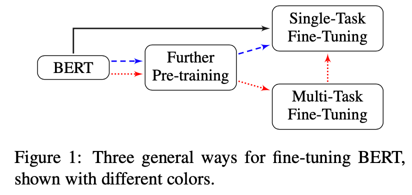

<!-- build time:Thu Apr 09 2020 15:47:02 GMT+0800 (China Standard Time) --><!DOCTYPE html><html><head><meta name="generator" content="Hexo 3.8.0"><meta charset="utf-8"><meta http-equiv="X-UA-Compatible" content="IE=edge,chrome=1"><meta name="viewport" content="width=device-width,initial-scale=1,maximum-scale=1,minimum-scale=1,user-scalable=no,minimal-ui"><meta name="renderer" content="webkit"><meta http-equiv="Cache-Control" content="no-transform"><meta http-equiv="Cache-Control" content="no-siteapp"><meta name="apple-mobile-web-app-capable" content="yes"><meta name="apple-mobile-web-app-status-bar-style" content="black"><meta name="format-detection" content="telephone=no,email=no,adress=no"><meta name="theme-color" content="#000000"><meta http-equiv="window-target" content="_top"><title>Paper Review -- How to Fine-Tune BERT for Text Classification | Yu Li</title><meta name="description" content="一、摘要针对BERT在文本分类任务上的应用, 文章对不同的fine-tuning方法进行了详尽的实验, 并给出了BERT进行文本分类任务的fine-tuning策略. 二、结论对于文本分类任务BERT的顶层(Top Layer)特征效果最好;使用合适的逐层下降学习率, BERT可以克服灾难性遗忘问题;对任务内、领域内的数据集进行further pre-training能够有效的提高分类表现;多任"><meta name="keywords" content="NLP,BERT Fine Tune,Text classigication"><meta property="og:type" content="article"><meta property="og:title" content="Paper Review -- How to Fine-Tune BERT for Text Classification"><meta property="og:url" content="http://sthsf.github.io/2020/04/09/Paper Review--How to Fine-Tune BERT for Text Classification/index.html"><meta property="og:site_name" content="Yu Li&#39;s personal blog"><meta property="og:description" content="一、摘要针对BERT在文本分类任务上的应用, 文章对不同的fine-tuning方法进行了详尽的实验, 并给出了BERT进行文本分类任务的fine-tuning策略. 二、结论对于文本分类任务BERT的顶层(Top Layer)特征效果最好;使用合适的逐层下降学习率, BERT可以克服灾难性遗忘问题;对任务内、领域内的数据集进行further pre-training能够有效的提高分类表现;多任"><meta property="og:locale" content="default"><meta property="og:image" content="http://sthsf.github.io/2020/04/09/Paper%20Review--How%20to%20Fine-Tune%20BERT%20for%20Text%20Classification/title.png"><meta property="og:image" content="http://sthsf.github.io/2020/04/09/Paper%20Review--How%20to%20Fine-Tune%20BERT%20for%20Text%20Classification/general.png"><meta property="og:updated_time" content="2020-04-09T07:37:54.522Z"><meta name="twitter:card" content="summary"><meta name="twitter:title" content="Paper Review -- How to Fine-Tune BERT for Text Classification"><meta name="twitter:description" content="一、摘要针对BERT在文本分类任务上的应用, 文章对不同的fine-tuning方法进行了详尽的实验, 并给出了BERT进行文本分类任务的fine-tuning策略. 二、结论对于文本分类任务BERT的顶层(Top Layer)特征效果最好;使用合适的逐层下降学习率, BERT可以克服灾难性遗忘问题;对任务内、领域内的数据集进行further pre-training能够有效的提高分类表现;多任"><meta name="twitter:image" content="http://sthsf.github.io/2020/04/09/Paper%20Review--How%20to%20Fine-Tune%20BERT%20for%20Text%20Classification/title.png"><link rel="canonical" href="http://sthsf.github.io/2020/04/09/Paper Review--How to Fine-Tune BERT for Text Classification/index.html"><link rel="icon" href="/favicon.png" type="image/x-icon"><link href="https://cdn.bootcss.com/font-awesome/4.7.0/css/font-awesome.min.css" rel="stylesheet"><link rel="stylesheet" href="/css/style.css"><link href="https://cdn.bootcss.com/KaTeX/0.7.1/katex.min.css" rel="stylesheet"></head></html><body class="main-center" itemscope itemtype="http://schema.org/WebPage"><header class="header" itemscope itemtype="http://schema.org/WPHeader"><div class="slimContent"><div class="navbar-header"><div class="profile-block text-center"><a id="avatar" href="https://github.com/sthsf" target="_blank"></a><h2 id="name" class="hidden-xs hidden-sm">Yu Li</h2><h3 id="title" class="hidden-xs hidden-sm hidden-md">Algorithm Developer &amp; Designer</h3><small id="location" class="text-muted hidden-xs hidden-sm"><i class="fa fa-map-marker"></i> ShangHai, China</small></div><div class="search" id="search-form-wrap"><form class="search-form sidebar-form"><div class="input-group"><input type="text" class="search-form-input form-control" placeholder="Search"> <span class="input-group-btn"><button type="submit" class="search-form-submit btn btn-flat"><i class="fa fa-search"></i></button></span></div></form><div class="ins-search"><div class="ins-search-mask"></div><div class="ins-search-container"><div class="ins-input-wrapper"><input type="text" class="ins-search-input" placeholder="Type something..." x-webkit-speech> <button type="button" class="close ins-close ins-selectable" data-dismiss="modal" aria-label="Close"><span aria-hidden="true">×</span></button></div><div class="ins-section-wrapper"><div class="ins-section-container"></div></div></div></div></div><button class="navbar-toggle collapsed" type="button" data-toggle="collapse" data-target="#main-navbar" aria-controls="main-navbar" aria-expanded="false"><span class="sr-only">Toggle navigation</span> <span class="icon-bar"></span> <span class="icon-bar"></span> <span class="icon-bar"></span></button></div><nav id="main-navbar" class="collapse navbar-collapse" itemscope itemtype="http://schema.org/SiteNavigationElement" role="navigation"><ul class="nav navbar-nav main-nav"><li class="menu-item menu-item-about"><a href="/about"><i class="fa fa-fw fa-coffee"></i> <span class="menu-title">About</span></a></li><li class="menu-item menu-item-home"><a href="/."><i class="fa fa-fw fa-dashboard"></i> <span class="menu-title">Home</span></a></li><li class="menu-item menu-item-archives"><a href="/archives"><i class="fa fa-fw fa-delicious"></i> <span class="menu-title">Archives</span></a></li><li class="menu-item menu-item-categories"><a href="/categories"><i class="fa fa-fw fa-folder"></i> <span class="menu-title">Categories</span></a></li><li class="menu-item menu-item-tags"><a href="/tags"><i class="fa fa-fw fa-tags"></i> <span class="menu-title">Tags</span></a></li><li class="menu-item menu-item-repository"><a href="/repository"><i class="fa fa-fw fa-code"></i> <span class="menu-title">Repository</span></a></li><li class="menu-item menu-item-links"><a href="/links"><i class="fa fa-fw fa-gg"></i> <span class="menu-title">Links</span></a></li><li class="menu-item menu-item-books"><a href="/books"><i class="fa fa-fw fa-leanpub"></i> <span class="menu-title">Books</span></a></li></ul><ul class="social-links"><li><a href="https://github.com/sthsf" target="_blank" title="Github" data-toggle="tooltip" data-placement="top"><i class="fa fa-github"></i></a></li><li><a href="http://weibo.com/sthsf" target="_blank" title="Weibo" data-toggle="tooltip" data-placement="top"><i class="fa fa-weibo"></i></a></li><li><a href="https://twitter.com/iwebued" target="_blank" title="Twitter" data-toggle="tooltip" data-placement="top"><i class="fa fa-twitter"></i></a></li><li><a href="/atom.xml" target="_blank" title="Rss" data-toggle="tooltip" data-placement="top"><i class="fa fa-rss"></i></a></li></ul></nav></div></header><aside class="sidebar" itemscope itemtype="http://schema.org/WPSideBar"><div class="slimContent"><div class="widget"><h3 class="widget-title">Tags</h3><div class="widget-body"><ul class="tag-list"><li class="tag-list-item"><a class="tag-list-link" href="/tags/BERT-Fine-Tune/">BERT Fine Tune</a><span class="tag-list-count">1</span></li><li class="tag-list-item"><a class="tag-list-link" href="/tags/Blog/">Blog</a><span class="tag-list-count">1</span></li><li class="tag-list-item"><a class="tag-list-link" href="/tags/CTR/">CTR</a><span class="tag-list-count">1</span></li><li class="tag-list-item"><a class="tag-list-link" href="/tags/Deeplearning/">Deeplearning</a><span class="tag-list-count">1</span></li><li class="tag-list-item"><a class="tag-list-link" href="/tags/Hexo/">Hexo</a><span class="tag-list-count">1</span></li><li class="tag-list-item"><a class="tag-list-link" href="/tags/NLP/">NLP</a><span class="tag-list-count">3</span></li><li class="tag-list-item"><a class="tag-list-link" href="/tags/Tensorflow/">Tensorflow</a><span class="tag-list-count">4</span></li><li class="tag-list-item"><a class="tag-list-link" href="/tags/Tensorflow基础知识/">Tensorflow基础知识</a><span class="tag-list-count">3</span></li><li class="tag-list-item"><a class="tag-list-link" href="/tags/Text-classigication/">Text classigication</a><span class="tag-list-count">1</span></li><li class="tag-list-item"><a class="tag-list-link" href="/tags/ValueError/">ValueError</a><span class="tag-list-count">1</span></li><li class="tag-list-item"><a class="tag-list-link" href="/tags/neo4j/">neo4j</a><span class="tag-list-count">1</span></li><li class="tag-list-item"><a class="tag-list-link" href="/tags/python/">python</a><span class="tag-list-count">1</span></li><li class="tag-list-item"><a class="tag-list-link" href="/tags/工具/">工具</a><span class="tag-list-count">1</span></li><li class="tag-list-item"><a class="tag-list-link" href="/tags/推荐系统/">推荐系统</a><span class="tag-list-count">1</span></li><li class="tag-list-item"><a class="tag-list-link" href="/tags/智能问答系统/">智能问答系统</a><span class="tag-list-count">1</span></li><li class="tag-list-item"><a class="tag-list-link" href="/tags/服务端/">服务端</a><span class="tag-list-count">1</span></li><li class="tag-list-item"><a class="tag-list-link" href="/tags/概率论/">概率论</a><span class="tag-list-count">1</span></li><li class="tag-list-item"><a class="tag-list-link" href="/tags/知识图谱/">知识图谱</a><span class="tag-list-count">2</span></li><li class="tag-list-item"><a class="tag-list-link" href="/tags/统计学习/">统计学习</a><span class="tag-list-count">1</span></li><li class="tag-list-item"><a class="tag-list-link" href="/tags/综述/">综述</a><span class="tag-list-count">2</span></li><li class="tag-list-item"><a class="tag-list-link" href="/tags/自然语言处理/">自然语言处理</a><span class="tag-list-count">2</span></li></ul></div></div><div class="widget"><h3 class="widget-title">Categories</h3><div class="widget-body"><ul class="category-list"><li class="category-list-item"><a class="category-list-link" href="/categories/CTR/">CTR</a><span class="category-list-count">1</span></li><li class="category-list-item"><a class="category-list-link" href="/categories/Hexo/">Hexo</a><span class="category-list-count">1</span></li><li class="category-list-item"><a class="category-list-link" href="/categories/NLP/">NLP</a><span class="category-list-count">2</span></li><li class="category-list-item"><a class="category-list-link" href="/categories/Papers/">Papers</a><span class="category-list-count">1</span></li><li class="category-list-item"><a class="category-list-link" href="/categories/Tensorflow/">Tensorflow</a><span class="category-list-count">1</span></li><li class="category-list-item"><a class="category-list-link" href="/categories/Tensorflow基础知识/">Tensorflow基础知识</a><span class="category-list-count">3</span></li><li class="category-list-item"><a class="category-list-link" href="/categories/github/">github</a><span class="category-list-count">1</span></li><li class="category-list-item"><a class="category-list-link" href="/categories/python基础知识/">python基础知识</a><span class="category-list-count">1</span></li><li class="category-list-item"><a class="category-list-link" href="/categories/智能问答系统/">智能问答系统</a><span class="category-list-count">1</span></li><li class="category-list-item"><a class="category-list-link" href="/categories/知识图谱/">知识图谱</a><span class="category-list-count">2</span></li><li class="category-list-item"><a class="category-list-link" href="/categories/统计学习/">统计学习</a><span class="category-list-count">1</span></li></ul></div></div><div class="widget"><h3 class="widget-title">Archive</h3><div class="widget-body"><ul class="archive-list"><li class="archive-list-item"><a class="archive-list-link" href="/archives/2020/04/">April 2020</a><span class="archive-list-count">1</span></li><li class="archive-list-item"><a class="archive-list-link" href="/archives/2020/02/">February 2020</a><span class="archive-list-count">5</span></li><li class="archive-list-item"><a class="archive-list-link" href="/archives/2019/08/">August 2019</a><span class="archive-list-count">1</span></li><li class="archive-list-item"><a class="archive-list-link" href="/archives/2019/03/">March 2019</a><span class="archive-list-count">2</span></li><li class="archive-list-item"><a class="archive-list-link" href="/archives/2017/09/">September 2017</a><span class="archive-list-count">2</span></li><li class="archive-list-item"><a class="archive-list-link" href="/archives/2017/08/">August 2017</a><span class="archive-list-count">2</span></li><li class="archive-list-item"><a class="archive-list-link" href="/archives/2017/06/">June 2017</a><span class="archive-list-count">1</span></li><li class="archive-list-item"><a class="archive-list-link" href="/archives/2017/03/">March 2017</a><span class="archive-list-count">1</span></li></ul></div></div><div class="widget"><h3 class="widget-title">Recent Posts</h3><div class="widget-body"><ul class="recent-post-list list-unstyled no-thumbnail"><li><div class="item-inner"><p class="item-category"><a class="category-link" href="/categories/Papers/">Papers</a></p><p class="item-title"><a href="/2020/04/09/Paper Review--How to Fine-Tune BERT for Text Classification/" class="title">Paper Review -- How to Fine-Tune BERT for Text Classification</a></p><p class="item-date"><time datetime="2020-04-09T02:09:46.000Z" itemprop="datePublished">2020-04-09</time></p></div></li><li><div class="item-inner"><p class="item-category"><a class="category-link" href="/categories/知识图谱/">知识图谱</a></p><p class="item-title"><a href="/2020/02/19/知识图谱---NEO4J/" class="title">图数据NEO4J简介</a></p><p class="item-date"><time datetime="2020-02-19T15:33:46.000Z" itemprop="datePublished">2020-02-19</time></p></div></li><li><div class="item-inner"><p class="item-category"><a class="category-link" href="/categories/NLP/">NLP</a></p><p class="item-title"><a href="/2020/02/18/NLP--命名实体识别/" class="title">命名实体识别(Name Entity Recognition)综述</a></p><p class="item-date"><time datetime="2020-02-18T07:37:46.000Z" itemprop="datePublished">2020-02-18</time></p></div></li><li><div class="item-inner"><p class="item-category"><a class="category-link" href="/categories/github/">github</a></p><p class="item-title"><a href="/2020/02/14/工具类介绍--github/" class="title">工具类介绍--github</a></p><p class="item-date"><time datetime="2020-02-14T02:09:46.000Z" itemprop="datePublished">2020-02-14</time></p></div></li><li><div class="item-inner"><p class="item-category"><a class="category-link" href="/categories/CTR/">CTR</a></p><p class="item-title"><a href="/2020/02/14/推荐系统--实战/" class="title">推荐系统--CTR实战</a></p><p class="item-date"><time datetime="2020-02-14T02:09:46.000Z" itemprop="datePublished">2020-02-14</time></p></div></li></ul></div></div></div></aside><main class="main" role="main"><div class="content"><article id="post-Paper Review--How to Fine-Tune BERT for Text Classification" class="article article-type-post" itemscope itemtype="http://schema.org/BlogPosting"><div class="article-header"><h1 class="article-title" itemprop="name">Paper Review -- How to Fine-Tune BERT for Text Classification</h1><div class="article-meta"><span class="article-date"><i class="fa fa-calendar-check-o"></i> <a href="/2020/04/09/Paper Review--How to Fine-Tune BERT for Text Classification/" class="article-date"><time datetime="2020-04-09T02:09:46.000Z" itemprop="datePublished">2020-04-09</time></a></span> <span class="article-category"><i class="fa fa-folder"></i> <a class="article-category-link" href="/categories/Papers/">Papers</a></span> <span class="article-tag"><i class="fa fa-tag"></i> <a class="article-tag-link" href="/tags/BERT-Fine-Tune/">BERT Fine Tune</a>, <a class="article-tag-link" href="/tags/NLP/">NLP</a>, <a class="article-tag-link" href="/tags/Text-classigication/">Text classigication</a></span> <span class="article-read hidden-xs"><i class="fa fa-eye" aria-hidden="true"></i> <span id="busuanzi_container_page_pv">阅读<span id="busuanzi_value_page_pv">0</span>次</span></span> <span class="post-comment"><i class="fa fa-commenting-o"></i> <a href="/2020/04/09/Paper Review--How to Fine-Tune BERT for Text Classification/#comments" class="article-comment-link">Comments</a></span> <span class="post-wordcount hidden-xs" itemprop="wordCount">字数统计: 847(字)</span> <span class="post-readcount hidden-xs" itemprop="timeRequired">阅读时长: 3(分)</span></div></div><div class="article-entry markdown-body" itemprop="articleBody"><center></center><h1 id="一-摘要"><a class="markdownIt-Anchor" href="#一-摘要"></a> 一、摘要</h1><p>针对BERT在文本分类任务上的应用, 文章对不同的fine-tuning方法进行了详尽的实验, 并给出了BERT进行文本分类任务的fine-tuning策略.</p><h1 id="二-结论"><a class="markdownIt-Anchor" href="#二-结论"></a> 二、结论</h1><ol><li><p>对于文本分类任务BERT的顶层(Top Layer)特征效果最好;</p></li><li><p>使用合适的逐层下降学习率, BERT可以克服灾难性遗忘问题;</p></li><li><p>对任务内、领域内的数据集进行further pre-training能够有效的提高分类表现;</p></li><li><p>多任务fine-tune有利于单任务的fine-tune, 但是效果不如further pre-training;</p></li><li><p>对于小样本数据, 使用BERT可以提高模型表现.</p></li></ol><h1 id="三-主要贡献"><a class="markdownIt-Anchor" href="#三-主要贡献"></a> 三、主要贡献</h1><ul><li><p>提出一个通用的Fine-Tuning策略</p><p><strong>step1</strong> 对于领域内语料库,或者任务内的训练数据, 可以对BERT进行Further Pre-training, 原因是BERT训练使用的是通用领域语料, 与目标领域的预料分布可能不一样;</p><p><strong>step2</strong> 如果有多个类似的任务可用, 可以通过多任务学习对BERT进行fine-tuning[多任务学习不熟];</p><p><strong>step3</strong> 对目标任务进行fine-tune, 针对多种Fine-Tuning策略如何选择.</p><ul><li>Fine-Tuning三步走策略:</li></ul></li></ul><center></center><ul><li><p>调研了以下Fine-Tuning策略, 并给出了针对TextClassification最好的实现方式</p><ol><li>preprocess of long text</li></ol><p>BERT的maxlen=512, 对于长文本需要截断处理, head+tail的截取方式表现最好.</p><ol start="2"><li>layer selection</li></ol><p>BERTbase中包含一层embedding layer, 12层encoder layer, 一层polling layer, 文本分类任务中BERT的最后一层表现最好.</p><ol start="3"><li>layer-wise learning rate</li></ol><p>为了解决过拟合问题, 比较好的optimizer和一个合适的学习率, 较小的学习率加上学习率衰减表现会更好, [lower learning rate to the lower layer 没理解lower layer, 从衰减的角度来看, lower layer的lr是最大的]</p><ol start="4"><li>catastrophic forgetting</li></ol><p>较低的学习率能够使BERT克服灾难性遗忘<br>5) low-shot learning problems</p><p>任务内Pretraining+Fine Tuning 效果好于直接Fine Tuning</p></li><li><p>Further Pre-training</p><p>由于通用开放领域与具体的目标领域的数据分布不完全相同，对任务内、领域内或者交叉领域内的语料数据进行pre-training, 能够提高下游任务的效果, 其中领域内数据集pre-training的表现效果更好.</p><ol><li>Within-Task Training Data</li></ol><p>使用任务内的训练集进行pre-training, 训练步数(training steps)对下游任务影响较大, 过大可能导致灾难性遗忘, 过小达不到pre-train效果.</p><ol start="2"><li>In-Domain and Cross-Domain Data</li></ol><p>从实验结果来看, 领域内pre-training的效果最好.</p></li><li><p>Multi-task Fine Tuning<br>介绍的不是很清楚, 从实验结果来看, 相对于单纯BERT Fine-tuning效果有所提高, 另外如果加上交叉领域的Pre-traing后, Multi-task fine tuning就没有必要了, 原因交叉领域的Pre-trianing之后, 就已经包含了多领域内的信息了.</p></li></ul><h1 id="四-hyperparameters选择"><a class="markdownIt-Anchor" href="#四-hyperparameters选择"></a> 四、Hyperparameters选择</h1><ul><li>Further Pretraining</li></ul><figure class="highlight json"><table><tr><td class="gutter"><pre><span class="line">1</span><br><span class="line">2</span><br><span class="line">3</span><br><span class="line">4</span><br><span class="line">5</span><br><span class="line">6</span><br><span class="line">7</span><br></pre></td><td class="code"><pre><span class="line">&#123;</span><br><span class="line">  <span class="attr">"batch_size"</span>: <span class="number">32</span>,</span><br><span class="line">  <span class="attr">"max_seq_len"</span>: <span class="number">128</span>,</span><br><span class="line">  <span class="attr">"learning_reate"</span>: <span class="number">5e-5</span>,</span><br><span class="line">  <span class="attr">"train_steps"</span>: <span class="number">100</span> * <span class="number">1000</span>,</span><br><span class="line">  <span class="attr">"warm_up_steps"</span>: <span class="number">10</span> * <span class="number">1000</span></span><br><span class="line">&#125;</span><br></pre></td></tr></table></figure><ul><li>Fine-tune</li></ul><figure class="highlight json"><table><tr><td class="gutter"><pre><span class="line">1</span><br><span class="line">2</span><br><span class="line">3</span><br><span class="line">4</span><br><span class="line">5</span><br><span class="line">6</span><br><span class="line">7</span><br><span class="line">8</span><br><span class="line">9</span><br><span class="line">10</span><br></pre></td><td class="code"><pre><span class="line">&#123;</span><br><span class="line">  <span class="attr">"batch_size"</span>: <span class="number">24</span>,</span><br><span class="line">  <span class="attr">"dropout_prob"</span>: <span class="number">.1</span>,</span><br><span class="line">  <span class="attr">"adam_beta1"</span>: <span class="number">0.9</span>,</span><br><span class="line">  <span class="attr">"adam_beta2"</span>: <span class="number">0.999</span>,</span><br><span class="line">  <span class="attr">"learning_rate_scchrduler"</span>: <span class="string">"slanted triangular"</span>,</span><br><span class="line">  <span class="attr">"learning_rate"</span>: <span class="number">2e-5</span>,</span><br><span class="line">  <span class="attr">"warm_up_prop"</span>: <span class="number">0.1</span>,</span><br><span class="line">  <span class="attr">"epochs"</span>: <span class="number">4</span></span><br><span class="line">&#125;</span><br></pre></td></tr></table></figure><h1 id="参考文献"><a class="markdownIt-Anchor" href="#参考文献"></a> 参考文献</h1><p>[1] <a href="https://arxiv.org/abs/1905.05583" target="_blank" rel="noopener">How to Fine-Tune BERT for Text Classification?</a></p><p>[2] <a href="https://www.dazhuanlan.com/2019/11/08/5dc57ab29a260/" target="_blank" rel="noopener">BERT 在文本分类任务中的最佳实践</a></p><p>[3] <a href="https://github.com/xuyige/BERT4doc-Classification" target="_blank" rel="noopener">BERT4doc-Classification</a></p><p>[4]<a href="https://gongel.cn/?p=5814" target="_blank" rel="noopener">【CCL-2019】How to Fine-Tune BERT for Text Classification?</a></p></div><div class="article-footer"><blockquote class="mt-2x"><ul class="post-copyright list-unstyled"><li class="post-copyright-link hidden-xs"><strong>本文链接：</strong> <a href="http://sthsf.github.io/2020/04/09/Paper Review--How to Fine-Tune BERT for Text Classification/" title="Paper Review -- How to Fine-Tune BERT for Text Classification" target="_blank" rel="external">http://sthsf.github.io/2020/04/09/Paper Review--How to Fine-Tune BERT for Text Classification/</a></li><li class="post-copyright-license"><strong>版权声明： </strong>本博客所有文章除特别声明外，均采用 <a href="http://creativecommons.org/licenses/by/4.0/deed.zh" target="_blank" rel="external">CC BY 4.0 CN协议</a> 许可协议。转载请注明出处！</li></ul></blockquote><div class="panel panel-default panel-badger"><div class="panel-body"><figure class="media"><div class="media-left"><a href="https://github.com/sthsf" target="_blank" class="img-burn thumb-sm visible-lg"></a></div><div class="media-body"><h3 class="media-heading"><a href="https://github.com/sthsf" target="_blank"><span class="text-dark">Yu Li</span><small class="ml-1x">Algorithm Developer &amp; Designer</small></a></h3><div></div></div></figure></div></div></div></article><section id="comments"><div id="uyan_frame"></div></section></div><nav class="bar bar-footer clearfix" data-stick-bottom><div class="bar-inner"><ul class="pager pull-left"><li class="next"><a href="/2020/02/19/知识图谱---NEO4J/" title="图数据NEO4J简介">Older&nbsp;&nbsp;<i class="fa fa-angle-right" aria-hidden="true"></i></a></li></ul><button type="button" class="btn btn-fancy btn-donate pop-onhover bg-gradient-warning hidden-xs" data-toggle="modal" data-target="#donateModal"><span>$</span></button><div class="bar-right"><div class="share-component" data-sites="weibo,qq,wechat,facebook,twitter, baidu" data-mobile-sites="weibo,qq,qzone"></div></div></div></nav><div class="modal modal-center modal-xs-full fade" id="donateModal" tabindex="-1" role="dialog"><div class="modal-dialog" role="document"><div class="modal-content"><button type="button" class="close" data-dismiss="modal" aria-label="Close"><span aria-hidden="true">&times;</span></button><div class="modal-body"><div class="donate-box"><div class="donate-tit"><p>Thank you for your support, I will continue to work hard!</p></div><div class="donate-payimg"></div><p class="text-muted mv">Scan this qrcode</p><div class="donate-payselect"><div class="pay_item checked" data-id="alipay" data-src="/images/donate/alipayimg.png"><div class="radio"><input type="radio" name="payment" id="input-alipay" value="alipay" checked><label class="pay_logo clickable" for="input-alipay"></label></div></div><div class="pay_item" data-id="weipay" data-src="/images/donate/weipayimg.png"><div class="radio"><input type="radio" name="payment" id="input-weipay" value="weipay"><label class="pay_logo clickable" for="input-weipay"></label></div></div></div><div class="text-grey"><p>Open<span id="donate-pay_txt">alipay</span>Scan this qrcode, you can sweep yards reward oh!</p></div></div></div></div></div></div></main><footer class="footer" itemscope itemtype="http://schema.org/WPFooter"><ul class="social-links"><li><a href="https://github.com/sthsf" target="_blank" title="Github" data-toggle="tooltip" data-placement="top"><i class="fa fa-github"></i></a></li><li><a href="http://weibo.com/sthsf" target="_blank" title="Weibo" data-toggle="tooltip" data-placement="top"><i class="fa fa-weibo"></i></a></li><li><a href="https://twitter.com/iwebued" target="_blank" title="Twitter" data-toggle="tooltip" data-placement="top"><i class="fa fa-twitter"></i></a></li><li><a href="/atom.xml" target="_blank" title="Rss" data-toggle="tooltip" data-placement="top"><i class="fa fa-rss"></i></a></li></ul><div class="copyright">&copy; 2020 Yu Li<div class="publishby">Theme by <a href="https://github.com/cofess" target="_blank">cofess </a>base on <a href="https://github.com/cofess/hexo-theme-pure" target="_blank">pure</a>.</div></div></footer><script src="https://cdn.bootcss.com/jquery/1.12.4/jquery.min.js"></script><script>window.jQuery||document.write('<script src="js/jquery.min.js"><\/script>')</script><script src="/js/plugin.js"></script><script src="/js/application.js"></script><script>!function(T){var n={TRANSLATION:{POSTS:"Posts",PAGES:"Pages",CATEGORIES:"Categories",TAGS:"Tags",UNTITLED:"(Untitled)"},ROOT_URL:"/",CONTENT_URL:"/content.json"};T.INSIGHT_CONFIG=n}(window)</script><script src="/js/insight.js"></script><script defer src="//dn-lbstatics.qbox.me/busuanzi/2.3/busuanzi.pure.mini.js"></script><script defer type="text/javascript" src="http://v2.uyan.cc/code/uyan.js?uid=[object Object]"></script><script defer>var _hmt=_hmt||[];!function(){var e=document.createElement("script");e.src="//hm.baidu.com/hm.js?f4564a0992521543e48ba54ba9be25a5";var t=document.getElementsByTagName("script")[0];t.parentNode.insertBefore(e,t)}()</script></body><!-- rebuild by neat -->